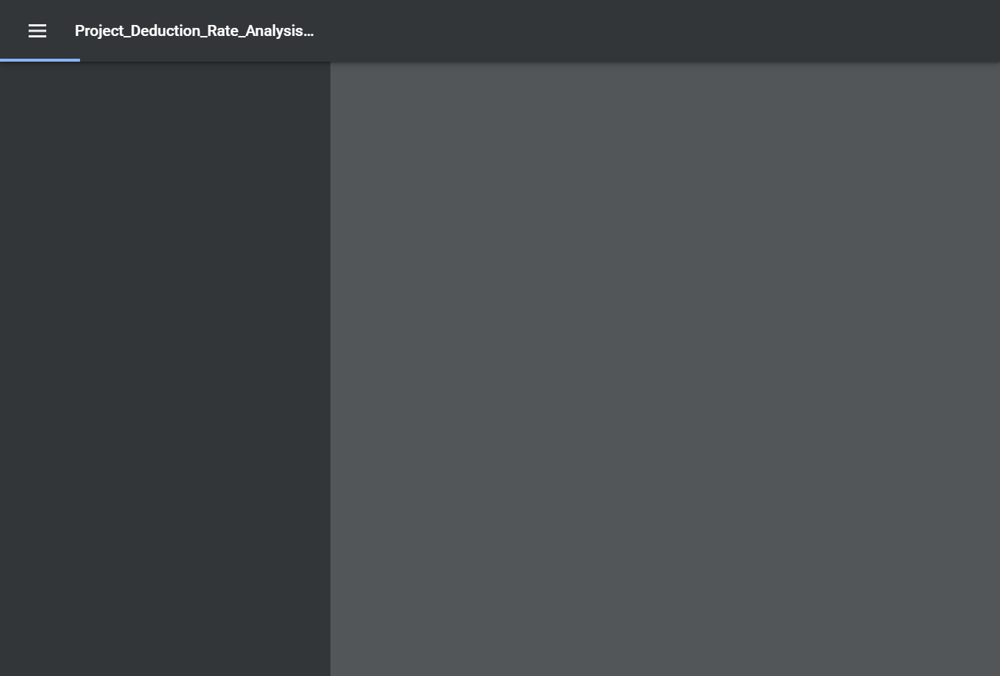

Total Tests
Total Steps
Total Time Taken (Current Run)
1h 22m 4s+803ms
Total Time Taken (Overall)
1h 22m 4s+803ms
Start
2021-09-02 08:54:27
End
2021-09-02 10:16:32
Pass Percentage
Environment
| Param | Value |
|---|---|
| OS | Windows 10 |
| User Name | NDave |
| Java Version | 15.0.2 |
| Host Name | Nourtek-100 |
Categories
| Name |
|---|
| Functional Test |
Tests
-
Report_PayrollAuditSummaryByWorkClassOld_Test :: testPayrollAuditSummaryOld fail2021-09-02 08:54:40 2021-09-02 08:57:00 0h 2m 19s+821mstestPayrollAuditSummaryOldFunctional Test
Status Timestamp Details 08:54:40 Test Started 08:54:40 Browser Name chrome 08:55:24 https://beta.wrapportal.com/login.aspx?ReturnUrl=%2f Current Url 08:55:25 nourusi User Name Entered Successfully 08:55:25 5teCu62%a_ Password Entered Successfully 08:55:26 Clicked On Login Button 08:55:26 Login Successfully 08:55:42 Clicked on Report Module Icon 08:55:44 Respective Program Select Form Dropdown 08:55:50 Payroll Audit Summar By Work Class Report is Selected 08:56:05 Project Selected Successfully 08:56:11 Contractor Selected Successfully 08:56:17 Clicked On Build Report Button 08:56:22 Report Generated 08:56:34 Pdf Generated 
08:56:49 Excel file is not Downloaded Successfully 08:57:00 testPayrollAuditSummaryOld Test has been Passed1 08:57:00 Test Ended -
Report_ContractorDeductTrackingOld_Test :: testContractorDeductTrackingOld fail2021-09-02 08:57:46 2021-09-02 08:59:32 0h 1m 46s+562mstestContractorDeductTrackingOldFunctional Test
Status Timestamp Details 08:57:46 Test Started 08:57:46 Browser Name chrome 08:58:46 org.openqa.selenium.remote.UnreachableBrowserException: Error communicating with the remote browser. It may have died. Build info: version: '4.0.0-alpha-4', revision: 'c2d955b49e' System info: host: 'NOURTEK-100', ip: '192.168.29.211', os.name: 'Windows 10', os.arch: 'amd64', os.version: '10.0', java.version: '15.0.2' Driver info: driver.version: RemoteWebDriver Capabilities {acceptInsecureCerts: false, browserName: chrome, browserVersion: 93.0.4577.63, chrome: {chromedriverVersion: 92.0.4515.107 (87a818b10553..., userDataDir: C:\Users\NDave\AppData\Loca...}, goog:chromeOptions: {debuggerAddress: localhost:54494}, javascriptEnabled: true, networkConnectionEnabled: false, pageLoadStrategy: normal, platform: WINDOWS, platformName: WINDOWS, proxy: Proxy(), setWindowRect: true, strictFileInteractability: false, timeouts: {implicit: 0, pageLoad: 300000, script: 30000}, unhandledPromptBehavior: dismiss and notify, webauthn:extension:credBlob: true, webauthn:extension:largeBlob: true, webauthn:virtualAuthenticators: true} Session ID: 28ab117cb7ca6255fa4e15de3a4aeb26 Something Went Wrong 08:59:02 Something Went Wrong 
08:59:02 org.openqa.selenium.NoSuchFrameException: no such frame (Session info: chrome=93.0.4577.63) Build info: version: '4.0.0-alpha-4', revision: 'c2d955b49e' System info: host: 'NOURTEK-100', ip: '192.168.29.211', os.name: 'Windows 10', os.arch: 'amd64', os.version: '10.0', java.version: '15.0.2' Driver info: org.openqa.selenium.chrome.ChromeDriver Capabilities {acceptInsecureCerts: false, browserName: chrome, browserVersion: 93.0.4577.63, chrome: {chromedriverVersion: 92.0.4515.107 (87a818b10553..., userDataDir: C:\Users\NDave\AppData\Loca...}, goog:chromeOptions: {debuggerAddress: localhost:54494}, javascriptEnabled: true, networkConnectionEnabled: false, pageLoadStrategy: normal, platform: WINDOWS, platformName: WINDOWS, proxy: Proxy(), setWindowRect: true, strictFileInteractability: false, timeouts: {implicit: 0, pageLoad: 300000, script: 30000}, unhandledPromptBehavior: dismiss and notify, webauthn:extension:credBlob: true, webauthn:extension:largeBlob: true, webauthn:virtualAuthenticators: true} Session ID: 28ab117cb7ca6255fa4e15de3a4aeb26Report Header Name Not Matched 08:59:02 Something Went Wrong 
08:59:32 testContractorDeductTrackingOld Test has been Failed2 08:59:32 org.openqa.selenium.NoSuchElementException: no such element: Unable to locate element: {"method":"xpath","selector":"//a[@id='HlinkExportPDF']"} (Session info: chrome=93.0.4577.63) For documentation on this error, please visit: https://selenium.dev/exceptions/#no_such_element Build info: version: '4.0.0-alpha-4', revision: 'c2d955b49e' System info: host: 'NOURTEK-100', ip: '192.168.29.211', os.name: 'Windows 10', os.arch: 'amd64', os.version: '10.0', java.version: '15.0.2' Driver info: org.openqa.selenium.chrome.ChromeDriver Capabilities {acceptInsecureCerts: false, browserName: chrome, browserVersion: 93.0.4577.63, chrome: {chromedriverVersion: 92.0.4515.107 (87a818b10553..., userDataDir: C:\Users\NDave\AppData\Loca...}, goog:chromeOptions: {debuggerAddress: localhost:54494}, javascriptEnabled: true, networkConnectionEnabled: false, pageLoadStrategy: normal, platform: WINDOWS, platformName: WINDOWS, proxy: Proxy(), setWindowRect: true, strictFileInteractability: false, timeouts: {implicit: 0, pageLoad: 300000, script: 30000}, unhandledPromptBehavior: dismiss and notify, webauthn:extension:credBlob: true, webauthn:extension:largeBlob: true, webauthn:virtualAuthenticators: true} Session ID: 28ab117cb7ca6255fa4e15de3a4aeb26 *** Element info: {Using=xpath, value=//a[@id='HlinkExportPDF']} at java.base/jdk.internal.reflect.NativeConstructorAccessorImpl.newInstance0(Native Method) at java.base/jdk.internal.reflect.NativeConstructorAccessorImpl.newInstance(NativeConstructorAccessorImpl.java:64) at java.base/jdk.internal.reflect.DelegatingConstructorAccessorImpl.newInstance(DelegatingConstructorAccessorImpl.java:45) at java.base/java.lang.reflect.Constructor.newInstanceWithCaller(Constructor.java:500) at java.base/java.lang.reflect.Constructor.newInstance(Constructor.java:481) at org.openqa.selenium.remote.codec.w3c.W3CHttpResponseCodec.createException(W3CHttpResponseCodec.java:196) at org.openqa.selenium.remote.codec.w3c.W3CHttpResponseCodec.decode(W3CHttpResponseCodec.java:129) at org.openqa.selenium.remote.codec.w3c.W3CHttpResponseCodec.decode(W3CHttpResponseCodec.java:53) at org.openqa.selenium.remote.HttpCommandExecutor.execute(HttpCommandExecutor.java:161) at org.openqa.selenium.remote.service.DriverCommandExecutor.execute(DriverCommandExecutor.java:83) at org.openqa.selenium.remote.RemoteWebDriver.execute(RemoteWebDriver.java:582) at org.openqa.selenium.remote.RemoteWebDriver.findElement(RemoteWebDriver.java:333) at org.openqa.selenium.remote.RemoteWebDriver.findElementByXPath(RemoteWebDriver.java:451) at org.openqa.selenium.By$ByXPath.findElement(By.java:394) at org.openqa.selenium.remote.RemoteWebDriver.findElement(RemoteWebDriver.java:325) at ObjectRepository.Report_EnrollmentListReportOld.linkExportToPDF(Report_EnrollmentListReportOld.java:90) at TestScript.Report_ContractorDeductTrackingOld_Test.testContractorDeductTrackingOld(Report_ContractorDeductTrackingOld_Test.java:100) at java.base/jdk.internal.reflect.NativeMethodAccessorImpl.invoke0(Native Method) at java.base/jdk.internal.reflect.NativeMethodAccessorImpl.invoke(NativeMethodAccessorImpl.java:64) at java.base/jdk.internal.reflect.DelegatingMethodAccessorImpl.invoke(DelegatingMethodAccessorImpl.java:43) at java.base/java.lang.reflect.Method.invoke(Method.java:564) at org.testng.internal.MethodInvocationHelper.invokeMethod(MethodInvocationHelper.java:133) at org.testng.internal.TestInvoker.invokeMethod(TestInvoker.java:598) at org.testng.internal.TestInvoker.invokeTestMethod(TestInvoker.java:173) at org.testng.internal.MethodRunner.runInSequence(MethodRunner.java:46) at org.testng.internal.TestInvoker$MethodInvocationAgent.invoke(TestInvoker.java:824) at org.testng.internal.TestInvoker.invokeTestMethods(TestInvoker.java:146) at org.testng.internal.TestMethodWorker.invokeTestMethods(TestMethodWorker.java:146) at org.testng.internal.TestMethodWorker.run(TestMethodWorker.java:128) at java.base/java.util.ArrayList.forEach(ArrayList.java:1511) at org.testng.TestRunner.privateRun(TestRunner.java:794) at org.testng.TestRunner.run(TestRunner.java:596) at org.testng.SuiteRunner.runTest(SuiteRunner.java:377) at org.testng.SuiteRunner.runSequentially(SuiteRunner.java:371) at org.testng.SuiteRunner.privateRun(SuiteRunner.java:332) at org.testng.SuiteRunner.run(SuiteRunner.java:276) at org.testng.SuiteRunnerWorker.runSuite(SuiteRunnerWorker.java:53) at org.testng.SuiteRunnerWorker.run(SuiteRunnerWorker.java:96) at org.testng.TestNG.runSuitesSequentially(TestNG.java:1212) at org.testng.TestNG.runSuitesLocally(TestNG.java:1134) at org.testng.TestNG.runSuites(TestNG.java:1063) at org.testng.TestNG.run(TestNG.java:1031) at org.testng.remote.AbstractRemoteTestNG.run(AbstractRemoteTestNG.java:115) at org.testng.remote.RemoteTestNG.initAndRun(RemoteTestNG.java:251) at org.testng.remote.RemoteTestNG.main(RemoteTestNG.java:77)08:59:32 
08:59:32 Test Ended -
Report_QuarterlyEnrollmenteportOld_Test :: testQuarterlyEnrollmenteportOld fail2021-09-02 08:59:47 2021-09-02 09:00:59 0h 1m 12s+58mstestQuarterlyEnrollmenteportOldFunctional Test
Status Timestamp Details 08:59:47 Test Started 08:59:47 Browser Name chrome 09:00:47 org.openqa.selenium.remote.UnreachableBrowserException: Error communicating with the remote browser. It may have died. Build info: version: '4.0.0-alpha-4', revision: 'c2d955b49e' System info: host: 'NOURTEK-100', ip: '192.168.29.211', os.name: 'Windows 10', os.arch: 'amd64', os.version: '10.0', java.version: '15.0.2' Driver info: driver.version: RemoteWebDriver Capabilities {acceptInsecureCerts: false, browserName: chrome, browserVersion: 93.0.4577.63, chrome: {chromedriverVersion: 92.0.4515.107 (87a818b10553..., userDataDir: C:\Users\NDave\AppData\Loca...}, goog:chromeOptions: {debuggerAddress: localhost:59856}, javascriptEnabled: true, networkConnectionEnabled: false, pageLoadStrategy: normal, platform: WINDOWS, platformName: WINDOWS, proxy: Proxy(), setWindowRect: true, strictFileInteractability: false, timeouts: {implicit: 0, pageLoad: 300000, script: 30000}, unhandledPromptBehavior: dismiss and notify, webauthn:extension:credBlob: true, webauthn:extension:largeBlob: true, webauthn:virtualAuthenticators: true} Session ID: bc21584ac564551d47f856e1df5d79ae Something Went Wrong 09:00:58 Something Went Wrong 
09:00:59 org.openqa.selenium.NoSuchFrameException: no such frame (Session info: chrome=93.0.4577.63) Build info: version: '4.0.0-alpha-4', revision: 'c2d955b49e' System info: host: 'NOURTEK-100', ip: '192.168.29.211', os.name: 'Windows 10', os.arch: 'amd64', os.version: '10.0', java.version: '15.0.2' Driver info: org.openqa.selenium.chrome.ChromeDriver Capabilities {acceptInsecureCerts: false, browserName: chrome, browserVersion: 93.0.4577.63, chrome: {chromedriverVersion: 92.0.4515.107 (87a818b10553..., userDataDir: C:\Users\NDave\AppData\Loca...}, goog:chromeOptions: {debuggerAddress: localhost:59856}, javascriptEnabled: true, networkConnectionEnabled: false, pageLoadStrategy: normal, platform: WINDOWS, platformName: WINDOWS, proxy: Proxy(), setWindowRect: true, strictFileInteractability: false, timeouts: {implicit: 0, pageLoad: 300000, script: 30000}, unhandledPromptBehavior: dismiss and notify, webauthn:extension:credBlob: true, webauthn:extension:largeBlob: true, webauthn:virtualAuthenticators: true} Session ID: bc21584ac564551d47f856e1df5d79aeReport Header Name Not Matched 09:00:59 Something Went Wrong 09:00:59 testQuarterlyEnrollmenteportOld Test has been Failed2 09:00:59 org.openqa.selenium.NoSuchFrameException: no such frame (Session info: chrome=93.0.4577.63) Build info: version: '4.0.0-alpha-4', revision: 'c2d955b49e' System info: host: 'NOURTEK-100', ip: '192.168.29.211', os.name: 'Windows 10', os.arch: 'amd64', os.version: '10.0', java.version: '15.0.2' Driver info: org.openqa.selenium.chrome.ChromeDriver Capabilities {acceptInsecureCerts: false, browserName: chrome, browserVersion: 93.0.4577.63, chrome: {chromedriverVersion: 92.0.4515.107 (87a818b10553..., userDataDir: C:\Users\NDave\AppData\Loca...}, goog:chromeOptions: {debuggerAddress: localhost:59856}, javascriptEnabled: true, networkConnectionEnabled: false, pageLoadStrategy: normal, platform: WINDOWS, platformName: WINDOWS, proxy: Proxy(), setWindowRect: true, strictFileInteractability: false, timeouts: {implicit: 0, pageLoad: 300000, script: 30000}, unhandledPromptBehavior: dismiss and notify, webauthn:extension:credBlob: true, webauthn:extension:largeBlob: true, webauthn:virtualAuthenticators: true} Session ID: bc21584ac564551d47f856e1df5d79ae at java.base/jdk.internal.reflect.NativeConstructorAccessorImpl.newInstance0(Native Method) at java.base/jdk.internal.reflect.NativeConstructorAccessorImpl.newInstance(NativeConstructorAccessorImpl.java:64) at java.base/jdk.internal.reflect.DelegatingConstructorAccessorImpl.newInstance(DelegatingConstructorAccessorImpl.java:45) at java.base/java.lang.reflect.Constructor.newInstanceWithCaller(Constructor.java:500) at java.base/java.lang.reflect.Constructor.newInstance(Constructor.java:481) at org.openqa.selenium.remote.codec.w3c.W3CHttpResponseCodec.createException(W3CHttpResponseCodec.java:196) at org.openqa.selenium.remote.codec.w3c.W3CHttpResponseCodec.decode(W3CHttpResponseCodec.java:129) at org.openqa.selenium.remote.codec.w3c.W3CHttpResponseCodec.decode(W3CHttpResponseCodec.java:53) at org.openqa.selenium.remote.HttpCommandExecutor.execute(HttpCommandExecutor.java:161) at org.openqa.selenium.remote.service.DriverCommandExecutor.execute(DriverCommandExecutor.java:83) at org.openqa.selenium.remote.RemoteWebDriver.execute(RemoteWebDriver.java:582) at org.openqa.selenium.remote.RemoteWebDriver$RemoteTargetLocator.frame(RemoteWebDriver.java:945) at TestScript.Report_QuarterlyEnrollmenteportOld_Test.testQuarterlyEnrollmenteportOld(Report_QuarterlyEnrollmenteportOld_Test.java:95) at java.base/jdk.internal.reflect.NativeMethodAccessorImpl.invoke0(Native Method) at java.base/jdk.internal.reflect.NativeMethodAccessorImpl.invoke(NativeMethodAccessorImpl.java:64) at java.base/jdk.internal.reflect.DelegatingMethodAccessorImpl.invoke(DelegatingMethodAccessorImpl.java:43) at java.base/java.lang.reflect.Method.invoke(Method.java:564) at org.testng.internal.MethodInvocationHelper.invokeMethod(MethodInvocationHelper.java:133) at org.testng.internal.TestInvoker.invokeMethod(TestInvoker.java:598) at org.testng.internal.TestInvoker.invokeTestMethod(TestInvoker.java:173) at org.testng.internal.MethodRunner.runInSequence(MethodRunner.java:46) at org.testng.internal.TestInvoker$MethodInvocationAgent.invoke(TestInvoker.java:824) at org.testng.internal.TestInvoker.invokeTestMethods(TestInvoker.java:146) at org.testng.internal.TestMethodWorker.invokeTestMethods(TestMethodWorker.java:146) at org.testng.internal.TestMethodWorker.run(TestMethodWorker.java:128) at java.base/java.util.ArrayList.forEach(ArrayList.java:1511) at org.testng.TestRunner.privateRun(TestRunner.java:794) at org.testng.TestRunner.run(TestRunner.java:596) at org.testng.SuiteRunner.runTest(SuiteRunner.java:377) at org.testng.SuiteRunner.runSequentially(SuiteRunner.java:371) at org.testng.SuiteRunner.privateRun(SuiteRunner.java:332) at org.testng.SuiteRunner.run(SuiteRunner.java:276) at org.testng.SuiteRunnerWorker.runSuite(SuiteRunnerWorker.java:53) at org.testng.SuiteRunnerWorker.run(SuiteRunnerWorker.java:96) at org.testng.TestNG.runSuitesSequentially(TestNG.java:1212) at org.testng.TestNG.runSuitesLocally(TestNG.java:1134) at org.testng.TestNG.runSuites(TestNG.java:1063) at org.testng.TestNG.run(TestNG.java:1031) at org.testng.remote.AbstractRemoteTestNG.run(AbstractRemoteTestNG.java:115) at org.testng.remote.RemoteTestNG.initAndRun(RemoteTestNG.java:251) at org.testng.remote.RemoteTestNG.main(RemoteTestNG.java:77)09:00:59 09:00:59 Test Ended -
Report_ContractorPayrollManHoursAndLaborRateOld_Test :: testContractorPayrollManHoursAndLaborRateOld fail2021-09-02 09:01:12 2021-09-02 09:05:12 0h 4m 0s+402mstestContractorPayrollManHoursAndLaborRateOldFunctional Test
Status Timestamp Details 09:01:12 Test Started 09:01:12 Browser Name chrome 09:02:12 org.openqa.selenium.remote.UnreachableBrowserException: Error communicating with the remote browser. It may have died. Build info: version: '4.0.0-alpha-4', revision: 'c2d955b49e' System info: host: 'NOURTEK-100', ip: '192.168.29.211', os.name: 'Windows 10', os.arch: 'amd64', os.version: '10.0', java.version: '15.0.2' Driver info: driver.version: RemoteWebDriver Capabilities {acceptInsecureCerts: false, browserName: chrome, browserVersion: 93.0.4577.63, chrome: {chromedriverVersion: 92.0.4515.107 (87a818b10553..., userDataDir: C:\Users\NDave\AppData\Loca...}, goog:chromeOptions: {debuggerAddress: localhost:62672}, javascriptEnabled: true, networkConnectionEnabled: false, pageLoadStrategy: normal, platform: WINDOWS, platformName: WINDOWS, proxy: Proxy(), setWindowRect: true, strictFileInteractability: false, timeouts: {implicit: 0, pageLoad: 300000, script: 30000}, unhandledPromptBehavior: dismiss and notify, webauthn:extension:credBlob: true, webauthn:extension:largeBlob: true, webauthn:virtualAuthenticators: true} Session ID: 09f3e4ee3e933fd039f53464c6c42323 Something Went Wrong 09:03:12 testContractorPayrollManHoursAndLaborRateOld Test has been Failed2 09:03:12 org.openqa.selenium.remote.UnreachableBrowserException: Error communicating with the remote browser. It may have died. Build info: version: '4.0.0-alpha-4', revision: 'c2d955b49e' System info: host: 'NOURTEK-100', ip: '192.168.29.211', os.name: 'Windows 10', os.arch: 'amd64', os.version: '10.0', java.version: '15.0.2' Driver info: driver.version: RemoteWebDriver Capabilities {acceptInsecureCerts: false, browserName: chrome, browserVersion: 93.0.4577.63, chrome: {chromedriverVersion: 92.0.4515.107 (87a818b10553..., userDataDir: C:\Users\NDave\AppData\Loca...}, goog:chromeOptions: {debuggerAddress: localhost:62672}, javascriptEnabled: true, networkConnectionEnabled: false, pageLoadStrategy: normal, platform: WINDOWS, platformName: WINDOWS, proxy: Proxy(), setWindowRect: true, strictFileInteractability: false, timeouts: {implicit: 0, pageLoad: 300000, script: 30000}, unhandledPromptBehavior: dismiss and notify, webauthn:extension:credBlob: true, webauthn:extension:largeBlob: true, webauthn:virtualAuthenticators: true} Session ID: 09f3e4ee3e933fd039f53464c6c42323 at org.openqa.selenium.remote.RemoteWebDriver.execute(RemoteWebDriver.java:603) at org.openqa.selenium.remote.RemoteWebDriver.execute(RemoteWebDriver.java:639) at org.openqa.selenium.remote.RemoteWebDriver.execute(RemoteWebDriver.java:643) at org.openqa.selenium.remote.RemoteWebDriver.getScreenshotAs(RemoteWebDriver.java:303) at GenericLibrary.FileUtils1.getScreenshot(FileUtils1.java:86) at TestScript.Report_ContractorPayrollManHoursAndLaborRateOld_Test.testContractorPayrollManHoursAndLaborRateOld(Report_ContractorPayrollManHoursAndLaborRateOld_Test.java:78) at java.base/jdk.internal.reflect.NativeMethodAccessorImpl.invoke0(Native Method) at java.base/jdk.internal.reflect.NativeMethodAccessorImpl.invoke(NativeMethodAccessorImpl.java:64) at java.base/jdk.internal.reflect.DelegatingMethodAccessorImpl.invoke(DelegatingMethodAccessorImpl.java:43) at java.base/java.lang.reflect.Method.invoke(Method.java:564) at org.testng.internal.MethodInvocationHelper.invokeMethod(MethodInvocationHelper.java:133) at org.testng.internal.TestInvoker.invokeMethod(TestInvoker.java:598) at org.testng.internal.TestInvoker.invokeTestMethod(TestInvoker.java:173) at org.testng.internal.MethodRunner.runInSequence(MethodRunner.java:46) at org.testng.internal.TestInvoker$MethodInvocationAgent.invoke(TestInvoker.java:824) at org.testng.internal.TestInvoker.invokeTestMethods(TestInvoker.java:146) at org.testng.internal.TestMethodWorker.invokeTestMethods(TestMethodWorker.java:146) at org.testng.internal.TestMethodWorker.run(TestMethodWorker.java:128) at java.base/java.util.ArrayList.forEach(ArrayList.java:1511) at org.testng.TestRunner.privateRun(TestRunner.java:794) at org.testng.TestRunner.run(TestRunner.java:596) at org.testng.SuiteRunner.runTest(SuiteRunner.java:377) at org.testng.SuiteRunner.runSequentially(SuiteRunner.java:371) at org.testng.SuiteRunner.privateRun(SuiteRunner.java:332) at org.testng.SuiteRunner.run(SuiteRunner.java:276) at org.testng.SuiteRunnerWorker.runSuite(SuiteRunnerWorker.java:53) at org.testng.SuiteRunnerWorker.run(SuiteRunnerWorker.java:96) at org.testng.TestNG.runSuitesSequentially(TestNG.java:1212) at org.testng.TestNG.runSuitesLocally(TestNG.java:1134) at org.testng.TestNG.runSuites(TestNG.java:1063) at org.testng.TestNG.run(TestNG.java:1031) at org.testng.remote.AbstractRemoteTestNG.run(AbstractRemoteTestNG.java:115) at org.testng.remote.RemoteTestNG.initAndRun(RemoteTestNG.java:251) at org.testng.remote.RemoteTestNG.main(RemoteTestNG.java:77) Caused by: java.lang.RuntimeException: NettyHttpHandler request execution error at org.openqa.selenium.remote.http.netty.NettyHttpHandler.makeCall(NettyHttpHandler.java:61) at org.openqa.selenium.remote.http.AddSeleniumUserAgent.lambda$apply$0(AddSeleniumUserAgent.java:42) at org.openqa.selenium.remote.http.Filter.lambda$andFinally$1(Filter.java:55) at org.openqa.selenium.remote.http.netty.NettyHttpHandler.execute(NettyHttpHandler.java:45) at org.openqa.selenium.remote.http.AddSeleniumUserAgent.lambda$apply$0(AddSeleniumUserAgent.java:42) at org.openqa.selenium.remote.http.Filter.lambda$andFinally$1(Filter.java:55) at org.openqa.selenium.remote.http.netty.NettyClient.execute(NettyClient.java:43) at org.openqa.selenium.remote.HttpCommandExecutor.execute(HttpCommandExecutor.java:158) at org.openqa.selenium.remote.service.DriverCommandExecutor.execute(DriverCommandExecutor.java:83) at org.openqa.selenium.remote.RemoteWebDriver.execute(RemoteWebDriver.java:582) ... 33 more Caused by: java.util.concurrent.ExecutionException: java.util.concurrent.TimeoutException: Request timeout to localhost/127.0.0.1:44303 after 60000 ms at java.base/java.util.concurrent.CompletableFuture.reportGet(CompletableFuture.java:395) at java.base/java.util.concurrent.CompletableFuture.get(CompletableFuture.java:2063) at org.asynchttpclient.netty.NettyResponseFuture.get(NettyResponseFuture.java:201) at org.openqa.selenium.remote.http.netty.NettyHttpHandler.makeCall(NettyHttpHandler.java:55) ... 42 more Caused by: java.util.concurrent.TimeoutException: Request timeout to localhost/127.0.0.1:44303 after 60000 ms at org.asynchttpclient.netty.timeout.TimeoutTimerTask.expire(TimeoutTimerTask.java:43) at org.asynchttpclient.netty.timeout.RequestTimeoutTimerTask.run(RequestTimeoutTimerTask.java:50) at io.netty.util.HashedWheelTimer$HashedWheelTimeout.expire(HashedWheelTimer.java:672) at io.netty.util.HashedWheelTimer$HashedWheelBucket.expireTimeouts(HashedWheelTimer.java:747) at io.netty.util.HashedWheelTimer$Worker.run(HashedWheelTimer.java:472) at io.netty.util.concurrent.FastThreadLocalRunnable.run(FastThreadLocalRunnable.java:30) at java.base/java.lang.Thread.run(Thread.java:832) -
Report_ContractorCloseOutTracking_OldTest :: testContractorCloseOutTrackingOld fail2021-09-02 09:05:26 2021-09-02 09:08:25 0h 2m 58s+920mstestContractorCloseOutTrackingOldFunctional Test
Status Timestamp Details 09:05:26 Test Started 09:05:26 Browser Name chrome 09:06:27 https://beta.wrapportal.com/login.aspx?ReturnUrl=%2f Current Url 09:06:27 nourusi User Name Entered Successfully 09:06:27 5teCu62%a_ Password Entered Successfully 09:06:29 Clicked On Login Button 09:06:29 Login Successfully 09:06:39 Clicked on Report Module Icon 09:06:44 Respective Program Select Form Dropdown 09:06:49 Contractor CloseOut Tracking Report is Selected 09:07:04 Project Selected Successfully 09:07:07 Contractor Selected Successfully 09:07:11 Clicked On Build Report Button 09:07:14 Report Generated 
09:07:38 Report Header Name Matched 09:07:38 Report Generated Successfully 09:07:58 Pdf Generated 
09:08:14 Excel file is not Downloaded Successfully 09:08:25 testContractorCloseOutTrackingOld Test has been Passed1 09:08:25 Test Ended -
Report_ContractorCostSummaryOld_Test :: testContractorCostSummaryOld fail2021-09-02 09:09:01 2021-09-02 09:10:39 0h 1m 38s+256mstestContractorCostSummaryOldFunctional Test
Status Timestamp Details 09:09:01 Test Started 09:09:01 Browser Name chrome 09:10:01 org.openqa.selenium.remote.UnreachableBrowserException: Error communicating with the remote browser. It may have died. Build info: version: '4.0.0-alpha-4', revision: 'c2d955b49e' System info: host: 'NOURTEK-100', ip: '192.168.29.211', os.name: 'Windows 10', os.arch: 'amd64', os.version: '10.0', java.version: '15.0.2' Driver info: driver.version: RemoteWebDriver Capabilities {acceptInsecureCerts: false, browserName: chrome, browserVersion: 93.0.4577.63, chrome: {chromedriverVersion: 92.0.4515.107 (87a818b10553..., userDataDir: C:\Users\NDave\AppData\Loca...}, goog:chromeOptions: {debuggerAddress: localhost:57757}, javascriptEnabled: true, networkConnectionEnabled: false, pageLoadStrategy: normal, platform: WINDOWS, platformName: WINDOWS, proxy: Proxy(), setWindowRect: true, strictFileInteractability: false, timeouts: {implicit: 0, pageLoad: 300000, script: 30000}, unhandledPromptBehavior: dismiss and notify, webauthn:extension:credBlob: true, webauthn:extension:largeBlob: true, webauthn:virtualAuthenticators: true} Session ID: 123acdfdb2f3dff29c7870f3768fdf81 Something Went Wrong 09:10:09 Something Went Wrong 
09:10:09 org.openqa.selenium.NoSuchFrameException: no such frame (Session info: chrome=93.0.4577.63) Build info: version: '4.0.0-alpha-4', revision: 'c2d955b49e' System info: host: 'NOURTEK-100', ip: '192.168.29.211', os.name: 'Windows 10', os.arch: 'amd64', os.version: '10.0', java.version: '15.0.2' Driver info: org.openqa.selenium.chrome.ChromeDriver Capabilities {acceptInsecureCerts: false, browserName: chrome, browserVersion: 93.0.4577.63, chrome: {chromedriverVersion: 92.0.4515.107 (87a818b10553..., userDataDir: C:\Users\NDave\AppData\Loca...}, goog:chromeOptions: {debuggerAddress: localhost:57757}, javascriptEnabled: true, networkConnectionEnabled: false, pageLoadStrategy: normal, platform: WINDOWS, platformName: WINDOWS, proxy: Proxy(), setWindowRect: true, strictFileInteractability: false, timeouts: {implicit: 0, pageLoad: 300000, script: 30000}, unhandledPromptBehavior: dismiss and notify, webauthn:extension:credBlob: true, webauthn:extension:largeBlob: true, webauthn:virtualAuthenticators: true} Session ID: 123acdfdb2f3dff29c7870f3768fdf81Report Header Name Not Matched 09:10:09 Something Went Wrong 09:10:39 testContractorCostSummaryOld Test has been Failed2 09:10:39 org.openqa.selenium.NoSuchElementException: no such element: Unable to locate element: {"method":"xpath","selector":"//a[@id='HlinkExportPDF']"} (Session info: chrome=93.0.4577.63) For documentation on this error, please visit: https://selenium.dev/exceptions/#no_such_element Build info: version: '4.0.0-alpha-4', revision: 'c2d955b49e' System info: host: 'NOURTEK-100', ip: '192.168.29.211', os.name: 'Windows 10', os.arch: 'amd64', os.version: '10.0', java.version: '15.0.2' Driver info: org.openqa.selenium.chrome.ChromeDriver Capabilities {acceptInsecureCerts: false, browserName: chrome, browserVersion: 93.0.4577.63, chrome: {chromedriverVersion: 92.0.4515.107 (87a818b10553..., userDataDir: C:\Users\NDave\AppData\Loca...}, goog:chromeOptions: {debuggerAddress: localhost:57757}, javascriptEnabled: true, networkConnectionEnabled: false, pageLoadStrategy: normal, platform: WINDOWS, platformName: WINDOWS, proxy: Proxy(), setWindowRect: true, strictFileInteractability: false, timeouts: {implicit: 0, pageLoad: 300000, script: 30000}, unhandledPromptBehavior: dismiss and notify, webauthn:extension:credBlob: true, webauthn:extension:largeBlob: true, webauthn:virtualAuthenticators: true} Session ID: 123acdfdb2f3dff29c7870f3768fdf81 *** Element info: {Using=xpath, value=//a[@id='HlinkExportPDF']} at java.base/jdk.internal.reflect.NativeConstructorAccessorImpl.newInstance0(Native Method) at java.base/jdk.internal.reflect.NativeConstructorAccessorImpl.newInstance(NativeConstructorAccessorImpl.java:64) at java.base/jdk.internal.reflect.DelegatingConstructorAccessorImpl.newInstance(DelegatingConstructorAccessorImpl.java:45) at java.base/java.lang.reflect.Constructor.newInstanceWithCaller(Constructor.java:500) at java.base/java.lang.reflect.Constructor.newInstance(Constructor.java:481) at org.openqa.selenium.remote.codec.w3c.W3CHttpResponseCodec.createException(W3CHttpResponseCodec.java:196) at org.openqa.selenium.remote.codec.w3c.W3CHttpResponseCodec.decode(W3CHttpResponseCodec.java:129) at org.openqa.selenium.remote.codec.w3c.W3CHttpResponseCodec.decode(W3CHttpResponseCodec.java:53) at org.openqa.selenium.remote.HttpCommandExecutor.execute(HttpCommandExecutor.java:161) at org.openqa.selenium.remote.service.DriverCommandExecutor.execute(DriverCommandExecutor.java:83) at org.openqa.selenium.remote.RemoteWebDriver.execute(RemoteWebDriver.java:582) at org.openqa.selenium.remote.RemoteWebDriver.findElement(RemoteWebDriver.java:333) at org.openqa.selenium.remote.RemoteWebDriver.findElementByXPath(RemoteWebDriver.java:451) at org.openqa.selenium.By$ByXPath.findElement(By.java:394) at org.openqa.selenium.remote.RemoteWebDriver.findElement(RemoteWebDriver.java:325) at ObjectRepository.Report_EnrollmentListReportOld.linkExportToPDF(Report_EnrollmentListReportOld.java:90) at TestScript.Report_ContractorCostSummaryOld_Test.testContractorCostSummaryOld(Report_ContractorCostSummaryOld_Test.java:87) at java.base/jdk.internal.reflect.NativeMethodAccessorImpl.invoke0(Native Method) at java.base/jdk.internal.reflect.NativeMethodAccessorImpl.invoke(NativeMethodAccessorImpl.java:64) at java.base/jdk.internal.reflect.DelegatingMethodAccessorImpl.invoke(DelegatingMethodAccessorImpl.java:43) at java.base/java.lang.reflect.Method.invoke(Method.java:564) at org.testng.internal.MethodInvocationHelper.invokeMethod(MethodInvocationHelper.java:133) at org.testng.internal.TestInvoker.invokeMethod(TestInvoker.java:598) at org.testng.internal.TestInvoker.invokeTestMethod(TestInvoker.java:173) at org.testng.internal.MethodRunner.runInSequence(MethodRunner.java:46) at org.testng.internal.TestInvoker$MethodInvocationAgent.invoke(TestInvoker.java:824) at org.testng.internal.TestInvoker.invokeTestMethods(TestInvoker.java:146) at org.testng.internal.TestMethodWorker.invokeTestMethods(TestMethodWorker.java:146) at org.testng.internal.TestMethodWorker.run(TestMethodWorker.java:128) at java.base/java.util.ArrayList.forEach(ArrayList.java:1511) at org.testng.TestRunner.privateRun(TestRunner.java:794) at org.testng.TestRunner.run(TestRunner.java:596) at org.testng.SuiteRunner.runTest(SuiteRunner.java:377) at org.testng.SuiteRunner.runSequentially(SuiteRunner.java:371) at org.testng.SuiteRunner.privateRun(SuiteRunner.java:332) at org.testng.SuiteRunner.run(SuiteRunner.java:276) at org.testng.SuiteRunnerWorker.runSuite(SuiteRunnerWorker.java:53) at org.testng.SuiteRunnerWorker.run(SuiteRunnerWorker.java:96) at org.testng.TestNG.runSuitesSequentially(TestNG.java:1212) at org.testng.TestNG.runSuitesLocally(TestNG.java:1134) at org.testng.TestNG.runSuites(TestNG.java:1063) at org.testng.TestNG.run(TestNG.java:1031) at org.testng.remote.AbstractRemoteTestNG.run(AbstractRemoteTestNG.java:115) at org.testng.remote.RemoteTestNG.initAndRun(RemoteTestNG.java:251) at org.testng.remote.RemoteTestNG.main(RemoteTestNG.java:77)09:10:39 09:10:39 Test Ended -
Report_ContractorDetailsOld_Test :: testContractorDetailsOld fail2021-09-02 09:10:58 2021-09-02 09:14:38 0h 3m 39s+611mstestContractorDetailsOldFunctional Test
Status Timestamp Details 09:10:58 Test Started 09:10:58 Browser Name chrome 09:12:03 https://beta.wrapportal.com/login.aspx?ReturnUrl=%2f Current Url 09:12:03 nourusi User Name Entered Successfully 09:12:03 5teCu62%a_ Password Entered Successfully 09:12:04 Clicked On Login Button 09:12:04 Login Successfully 09:12:28 Clicked on Report Module Icon 09:12:59 Respective Program Select Form Dropdown 09:13:04 Contractor Details Report is Selected 09:13:22 Project Selected Successfully 09:13:25 Contractor Selected Successfully 09:13:30 Clicked On Build Report Button 09:13:33 Report Generated 
09:13:56 Report Header Name Matched 09:13:56 Report Generated Successfully 09:14:11 Pdf Generated 
09:14:27 Excel file is not Downloaded Successfully 09:14:38 testContractorDetailsOld Test has been Passed1 09:14:38 Test Ended -
Report_LaborRateAnalysisOld_Test :: testLaborRateAnalysisOld fail2021-09-02 09:14:56 2021-09-02 09:17:27 0h 2m 30s+282mstestLaborRateAnalysisOldFunctional Test
Status Timestamp Details 09:14:56 Test Started 09:14:56 Browser Name chrome 09:15:50 https://beta.wrapportal.com/login.aspx?ReturnUrl=%2f Current Url 09:15:50 nourusi User Name Entered Successfully 09:15:50 5teCu62%a_ Password Entered Successfully 09:15:52 Clicked On Login Button 09:15:52 Login Successfully 09:16:12 Clicked on Report Module Icon 09:16:14 Respective Program Select Form Dropdown 09:16:21 Labor Rate Analysis Report is Selected 09:16:40 Project Selected Successfully 09:16:43 Contractor Selected Successfully 09:16:47 Clicked On Build Report Button 09:16:50 Report Generated 09:16:53 Report Header Name Matched 09:16:53 Report Generated Successfully 09:17:00 Pdf Generated 09:17:15 Excel file is not Downloaded Successfully 09:17:27 testLaborRateAnalysisOld Test has been Passed1 09:17:27 Test Ended -
Report_StatusReportOld_Test :: testStatusReportOld fail2021-09-02 09:17:42 2021-09-02 09:19:57 0h 2m 14s+816mstestStatusReportOldFunctional Test
Status Timestamp Details 09:17:42 Test Started 09:17:42 Browser Name chrome 09:18:32 https://beta.wrapportal.com/login.aspx?ReturnUrl=%2f Current Url 09:18:32 nourusi User Name Entered Successfully 09:18:32 5teCu62%a_ Password Entered Successfully 09:18:34 Clicked On Login Button 09:18:34 Login Successfully 09:18:44 Clicked on Report Module Icon 09:18:46 Respective Program Select Form Dropdown 09:18:53 Status Report Report is Selected 09:19:11 Project Selected Successfully 09:19:14 Contractor Selected Successfully 09:19:20 Clicked On Build Report Button 09:19:23 Report Generated 09:19:23 Report Header Name Matched 09:19:23 Report Generated Successfully 09:19:31 Pdf Generated 
09:19:46 Excel file is not Downloaded Successfully 09:19:57 testStatusReportOld Test has been Passed1 09:19:57 Test Ended -
Report_LossControlReportOld_Test :: testLossControlReportOld fail2021-09-02 09:20:07 2021-09-02 09:22:44 0h 2m 36s+890mstestLossControlReportOldFunctional Test
Status Timestamp Details 09:20:07 Test Started 09:20:07 Browser Name chrome 09:21:07 https://beta.wrapportal.com/login.aspx?ReturnUrl=%2f Current Url 09:21:07 nourusi User Name Entered Successfully 09:21:07 5teCu62%a_ Password Entered Successfully 09:21:09 Clicked On Login Button 09:21:09 Login Successfully 09:21:23 Clicked on Report Module Icon 09:21:31 Respective Program Select Form Dropdown 09:21:36 Loss Control Report Report is Selected 09:22:03 Project Selected Successfully 09:22:06 Contractor Selected Successfully 09:22:11 Clicked On Build Report Button 09:22:14 Report Generated 
09:22:14 Report Header Name Matched 09:22:14 Report Generated Successfully 09:22:44 testLossControlReportOld Test has been Failed2 09:22:44 org.openqa.selenium.NoSuchElementException: no such element: Unable to locate element: {"method":"xpath","selector":"//a[@id='HlinkExportPDF']"} (Session info: chrome=93.0.4577.63) For documentation on this error, please visit: https://selenium.dev/exceptions/#no_such_element Build info: version: '4.0.0-alpha-4', revision: 'c2d955b49e' System info: host: 'NOURTEK-100', ip: '192.168.29.211', os.name: 'Windows 10', os.arch: 'amd64', os.version: '10.0', java.version: '15.0.2' Driver info: org.openqa.selenium.chrome.ChromeDriver Capabilities {acceptInsecureCerts: false, browserName: chrome, browserVersion: 93.0.4577.63, chrome: {chromedriverVersion: 92.0.4515.107 (87a818b10553..., userDataDir: C:\Users\NDave\AppData\Loca...}, goog:chromeOptions: {debuggerAddress: localhost:55123}, javascriptEnabled: true, networkConnectionEnabled: false, pageLoadStrategy: normal, platform: WINDOWS, platformName: WINDOWS, proxy: Proxy(), setWindowRect: true, strictFileInteractability: false, timeouts: {implicit: 0, pageLoad: 300000, script: 30000}, unhandledPromptBehavior: dismiss and notify, webauthn:extension:credBlob: true, webauthn:extension:largeBlob: true, webauthn:virtualAuthenticators: true} Session ID: fd3aefae05f8a750d34d03221310f446 *** Element info: {Using=xpath, value=//a[@id='HlinkExportPDF']} at java.base/jdk.internal.reflect.NativeConstructorAccessorImpl.newInstance0(Native Method) at java.base/jdk.internal.reflect.NativeConstructorAccessorImpl.newInstance(NativeConstructorAccessorImpl.java:64) at java.base/jdk.internal.reflect.DelegatingConstructorAccessorImpl.newInstance(DelegatingConstructorAccessorImpl.java:45) at java.base/java.lang.reflect.Constructor.newInstanceWithCaller(Constructor.java:500) at java.base/java.lang.reflect.Constructor.newInstance(Constructor.java:481) at org.openqa.selenium.remote.codec.w3c.W3CHttpResponseCodec.createException(W3CHttpResponseCodec.java:196) at org.openqa.selenium.remote.codec.w3c.W3CHttpResponseCodec.decode(W3CHttpResponseCodec.java:129) at org.openqa.selenium.remote.codec.w3c.W3CHttpResponseCodec.decode(W3CHttpResponseCodec.java:53) at org.openqa.selenium.remote.HttpCommandExecutor.execute(HttpCommandExecutor.java:161) at org.openqa.selenium.remote.service.DriverCommandExecutor.execute(DriverCommandExecutor.java:83) at org.openqa.selenium.remote.RemoteWebDriver.execute(RemoteWebDriver.java:582) at org.openqa.selenium.remote.RemoteWebDriver.findElement(RemoteWebDriver.java:333) at org.openqa.selenium.remote.RemoteWebDriver.findElementByXPath(RemoteWebDriver.java:451) at org.openqa.selenium.By$ByXPath.findElement(By.java:394) at org.openqa.selenium.remote.RemoteWebDriver.findElement(RemoteWebDriver.java:325) at ObjectRepository.Report_EnrollmentListReportOld.linkExportToPDF(Report_EnrollmentListReportOld.java:90) at TestScript.Report_LossControlReportOld_Test.testLossControlReportOld(Report_LossControlReportOld_Test.java:80) at java.base/jdk.internal.reflect.NativeMethodAccessorImpl.invoke0(Native Method) at java.base/jdk.internal.reflect.NativeMethodAccessorImpl.invoke(NativeMethodAccessorImpl.java:64) at java.base/jdk.internal.reflect.DelegatingMethodAccessorImpl.invoke(DelegatingMethodAccessorImpl.java:43) at java.base/java.lang.reflect.Method.invoke(Method.java:564) at org.testng.internal.MethodInvocationHelper.invokeMethod(MethodInvocationHelper.java:133) at org.testng.internal.TestInvoker.invokeMethod(TestInvoker.java:598) at org.testng.internal.TestInvoker.invokeTestMethod(TestInvoker.java:173) at org.testng.internal.MethodRunner.runInSequence(MethodRunner.java:46) at org.testng.internal.TestInvoker$MethodInvocationAgent.invoke(TestInvoker.java:824) at org.testng.internal.TestInvoker.invokeTestMethods(TestInvoker.java:146) at org.testng.internal.TestMethodWorker.invokeTestMethods(TestMethodWorker.java:146) at org.testng.internal.TestMethodWorker.run(TestMethodWorker.java:128) at java.base/java.util.ArrayList.forEach(ArrayList.java:1511) at org.testng.TestRunner.privateRun(TestRunner.java:794) at org.testng.TestRunner.run(TestRunner.java:596) at org.testng.SuiteRunner.runTest(SuiteRunner.java:377) at org.testng.SuiteRunner.runSequentially(SuiteRunner.java:371) at org.testng.SuiteRunner.privateRun(SuiteRunner.java:332) at org.testng.SuiteRunner.run(SuiteRunner.java:276) at org.testng.SuiteRunnerWorker.runSuite(SuiteRunnerWorker.java:53) at org.testng.SuiteRunnerWorker.run(SuiteRunnerWorker.java:96) at org.testng.TestNG.runSuitesSequentially(TestNG.java:1212) at org.testng.TestNG.runSuitesLocally(TestNG.java:1134) at org.testng.TestNG.runSuites(TestNG.java:1063) at org.testng.TestNG.run(TestNG.java:1031) at org.testng.remote.AbstractRemoteTestNG.run(AbstractRemoteTestNG.java:115) at org.testng.remote.RemoteTestNG.initAndRun(RemoteTestNG.java:251) at org.testng.remote.RemoteTestNG.main(RemoteTestNG.java:77)09:22:44 
09:22:44 Test Ended -
Report_SubcontractorStatusReportOld_Test :: testSubcontractorStatusReportOld fail2021-09-02 09:23:28 2021-09-02 09:27:26 0h 3m 57s+452mstestSubcontractorStatusReportOldFunctional Test
Status Timestamp Details 09:23:28 Test Started 09:23:28 Browser Name chrome 09:24:22 https://beta.wrapportal.com/login.aspx?ReturnUrl=%2f Current Url 09:24:23 nourusi User Name Entered Successfully 09:24:23 5teCu62%a_ Password Entered Successfully 09:24:24 Clicked On Login Button 09:24:24 Login Successfully 09:24:43 Clicked on Report Module Icon 09:24:45 Respective Program Select Form Dropdown 09:24:51 Subcontractor Status Report is Selected 09:25:01 Project Selected Successfully 09:25:08 Clicked On Build Report Button 09:25:11 Report Generated 
09:26:04 Report Header Name Matched 09:26:04 Report Generated Successfully 09:27:00 Pdf Generated 
09:27:15 Excel file is not Downloaded Successfully 09:27:26 testSubcontractorStatusReportOld Test has been Passed1 09:27:26 Test Ended -
Report_ContractorReportOld_Test :: testContractorReportOld fail2021-09-02 09:28:11 2021-09-02 09:32:15 0h 4m 3s+428mstestContractorReportOldFunctional Test
Status Timestamp Details 09:28:11 Test Started 09:28:11 Browser Name chrome 09:29:08 https://beta.wrapportal.com/login.aspx?ReturnUrl=%2f Current Url 09:29:08 nourusi User Name Entered Successfully 09:29:08 5teCu62%a_ Password Entered Successfully 09:29:10 Clicked On Login Button 09:29:10 Login Successfully 09:29:34 Clicked on Report Module Icon 09:29:36 Respective Program Select Form Dropdown 09:29:42 Contractor Report Report is Selected 09:29:50 Project Selected Successfully 09:29:55 Clicked On Build Report Button 09:30:00 Report Generated 09:30:51 Report Header Name Matched 09:30:51 Report Generated Successfully 09:31:48 Pdf Generated 
09:32:04 Excel file is not Downloaded Successfully 09:32:15 testContractorReportOld Test has been Passed1 09:32:15 Test Ended -
Report_InsuranceCreditDeductReviewOld_Test :: testInsuranceCreditDeductReviewOld fail2021-09-02 09:32:58 2021-09-02 09:35:49 0h 2m 50s+352mstestInsuranceCreditDeductReviewOldFunctional Test
Status Timestamp Details 09:32:58 Test Started 09:32:58 Browser Name chrome 09:33:36 https://beta.wrapportal.com/login.aspx?ReturnUrl=%2f Current Url 09:33:36 nourusi User Name Entered Successfully 09:33:36 5teCu62%a_ Password Entered Successfully 09:33:38 Clicked On Login Button 09:33:38 Login Successfully 09:33:48 Clicked on Report Module Icon 09:33:56 Respective Program Select Form Dropdown 09:34:01 Insurance Credit Deduct Review Report is Selected 09:34:16 Project Selected Successfully 09:34:19 Contractor Selected Successfully 09:34:24 Clicked On Build Report Button 09:34:29 Report Generated 09:34:57 Report Header Name Matched 09:34:57 Report Generated Successfully 09:35:37 Excel file is not Downloaded Successfully 09:35:49 testInsuranceCreditDeductReviewOld Test has been Passed1 09:35:49 Test Ended -
Report_CertificateTrackingReportOld_Test :: testCertificateTrackingReportOld fail2021-09-02 09:36:16 2021-09-02 09:40:20 0h 4m 3s+634mstestCertificateTrackingReportOldFunctional Test
Status Timestamp Details 09:36:16 Test Started 09:36:16 Browser Name chrome 09:37:13 https://beta.wrapportal.com/login.aspx?ReturnUrl=%2f Current Url 09:37:13 nourusi User Name Entered Successfully 09:37:13 5teCu62%a_ Password Entered Successfully 09:37:15 Clicked On Login Button 09:37:15 Login Successfully 09:37:39 Clicked on Report Module Icon 09:37:41 Respective Program Select Form Dropdown 09:37:46 Certificate Tracking Report Report is Selected 09:37:59 Project Selected Successfully 09:38:02 Clicked On Build Report Button 09:38:05 Report Generated 
09:38:57 Report Header Name Matched 09:38:57 Report Generated Successfully 09:39:53 Pdf Generated 
09:40:08 Excel file is not Downloaded Successfully 09:40:20 testCertificateTrackingReportOld Test has been Passed1 09:40:20 Test Ended -
Report_WorkClassPayrollHours_Test :: testWorkClassPayrollHours pass2021-09-02 09:41:06 2021-09-02 09:42:56 0h 1m 49s+832mstestWorkClassPayrollHoursFunctional Test
Status Timestamp Details 09:41:06 Test Started 09:41:06 Browser Name chrome 09:42:11 https://beta.wrapportal.com/login.aspx?ReturnUrl=%2f Current Url 09:42:12 nourusi User Name Entered Successfully 09:42:12 5teCu62%a_ Password Entered Successfully 09:42:13 Clicked On Login Button 09:42:13 Login Successfully 09:42:30 Clicked on Report Module Icon 09:42:32 Respective Program Select Form Dropdown 09:42:39 Work Class Payroll Hours Report is Selected 09:42:39 Project Selected Successfully 09:42:50 From Date Selected Successfully 09:42:50 To Date Selected Successfully 09:42:53 Clicked On Build Report Button 09:42:56 Report Generated 09:42:56 Report Header Name Matched 09:42:56 Report Generated Successfully 09:42:56 testWorkClassPayrollHours Test has been Passed1 09:42:56 Test Ended -
Report_ContractorMonthlyManHours_Test :: testContractorMonthlyManHours fail2021-09-02 09:43:12 2021-09-02 09:45:38 0h 2m 25s+406mstestContractorMonthlyManHoursFunctional Test
Status Timestamp Details 09:43:12 Test Started 09:43:12 Browser Name chrome 09:44:08 https://beta.wrapportal.com/login.aspx?ReturnUrl=%2f Current Url 09:44:08 nourusi User Name Entered Successfully 09:44:08 5teCu62%a_ Password Entered Successfully 09:44:09 Clicked On Login Button 09:44:09 Login Successfully 09:44:23 Clicked on Report Module Icon 09:44:25 Respective Program Select Form Dropdown 09:44:30 Contractor Monthly Man Hours Report is Selected 09:44:30 Project Selected Successfully 09:44:50 From Date Selected Successfully 09:44:50 To Date Selected Successfully 09:45:04 Clicked On Build Report Button 09:45:07 Report Header Name Matched 09:45:07 Report Generated Successfully 09:45:37 testContractorMonthlyManHours Test has been Failed2 09:45:37 org.openqa.selenium.NoSuchElementException: no such element: Unable to locate element: {"method":"xpath","selector":"//a[@id='lnkPDF']"} (Session info: chrome=93.0.4577.63) For documentation on this error, please visit: https://selenium.dev/exceptions/#no_such_element Build info: version: '4.0.0-alpha-4', revision: 'c2d955b49e' System info: host: 'NOURTEK-100', ip: '192.168.29.211', os.name: 'Windows 10', os.arch: 'amd64', os.version: '10.0', java.version: '15.0.2' Driver info: org.openqa.selenium.chrome.ChromeDriver Capabilities {acceptInsecureCerts: false, browserName: chrome, browserVersion: 93.0.4577.63, chrome: {chromedriverVersion: 92.0.4515.107 (87a818b10553..., userDataDir: C:\Users\NDave\AppData\Loca...}, goog:chromeOptions: {debuggerAddress: localhost:53999}, javascriptEnabled: true, networkConnectionEnabled: false, pageLoadStrategy: normal, platform: WINDOWS, platformName: WINDOWS, proxy: Proxy(), setWindowRect: true, strictFileInteractability: false, timeouts: {implicit: 0, pageLoad: 300000, script: 30000}, unhandledPromptBehavior: dismiss and notify, webauthn:extension:credBlob: true, webauthn:extension:largeBlob: true, webauthn:virtualAuthenticators: true} Session ID: 9b9fcf4969b4800450cf98bf4a779ae4 *** Element info: {Using=xpath, value=//a[@id='lnkPDF']} at java.base/jdk.internal.reflect.NativeConstructorAccessorImpl.newInstance0(Native Method) at java.base/jdk.internal.reflect.NativeConstructorAccessorImpl.newInstance(NativeConstructorAccessorImpl.java:64) at java.base/jdk.internal.reflect.DelegatingConstructorAccessorImpl.newInstance(DelegatingConstructorAccessorImpl.java:45) at java.base/java.lang.reflect.Constructor.newInstanceWithCaller(Constructor.java:500) at java.base/java.lang.reflect.Constructor.newInstance(Constructor.java:481) at org.openqa.selenium.remote.codec.w3c.W3CHttpResponseCodec.createException(W3CHttpResponseCodec.java:196) at org.openqa.selenium.remote.codec.w3c.W3CHttpResponseCodec.decode(W3CHttpResponseCodec.java:129) at org.openqa.selenium.remote.codec.w3c.W3CHttpResponseCodec.decode(W3CHttpResponseCodec.java:53) at org.openqa.selenium.remote.HttpCommandExecutor.execute(HttpCommandExecutor.java:161) at org.openqa.selenium.remote.service.DriverCommandExecutor.execute(DriverCommandExecutor.java:83) at org.openqa.selenium.remote.RemoteWebDriver.execute(RemoteWebDriver.java:582) at org.openqa.selenium.remote.RemoteWebDriver.findElement(RemoteWebDriver.java:333) at org.openqa.selenium.remote.RemoteWebDriver.findElementByXPath(RemoteWebDriver.java:451) at org.openqa.selenium.By$ByXPath.findElement(By.java:394) at org.openqa.selenium.remote.RemoteWebDriver.findElement(RemoteWebDriver.java:325) at ObjectRepository.Report_ContractorMonthlyManHours.pdfLink(Report_ContractorMonthlyManHours.java:85) at TestScript.Report_ContractorMonthlyManHours_Test.testContractorMonthlyManHours(Report_ContractorMonthlyManHours_Test.java:72) at java.base/jdk.internal.reflect.NativeMethodAccessorImpl.invoke0(Native Method) at java.base/jdk.internal.reflect.NativeMethodAccessorImpl.invoke(NativeMethodAccessorImpl.java:64) at java.base/jdk.internal.reflect.DelegatingMethodAccessorImpl.invoke(DelegatingMethodAccessorImpl.java:43) at java.base/java.lang.reflect.Method.invoke(Method.java:564) at org.testng.internal.MethodInvocationHelper.invokeMethod(MethodInvocationHelper.java:133) at org.testng.internal.TestInvoker.invokeMethod(TestInvoker.java:598) at org.testng.internal.TestInvoker.invokeTestMethod(TestInvoker.java:173) at org.testng.internal.MethodRunner.runInSequence(MethodRunner.java:46) at org.testng.internal.TestInvoker$MethodInvocationAgent.invoke(TestInvoker.java:824) at org.testng.internal.TestInvoker.invokeTestMethods(TestInvoker.java:146) at org.testng.internal.TestMethodWorker.invokeTestMethods(TestMethodWorker.java:146) at org.testng.internal.TestMethodWorker.run(TestMethodWorker.java:128) at java.base/java.util.ArrayList.forEach(ArrayList.java:1511) at org.testng.TestRunner.privateRun(TestRunner.java:794) at org.testng.TestRunner.run(TestRunner.java:596) at org.testng.SuiteRunner.runTest(SuiteRunner.java:377) at org.testng.SuiteRunner.runSequentially(SuiteRunner.java:371) at org.testng.SuiteRunner.privateRun(SuiteRunner.java:332) at org.testng.SuiteRunner.run(SuiteRunner.java:276) at org.testng.SuiteRunnerWorker.runSuite(SuiteRunnerWorker.java:53) at org.testng.SuiteRunnerWorker.run(SuiteRunnerWorker.java:96) at org.testng.TestNG.runSuitesSequentially(TestNG.java:1212) at org.testng.TestNG.runSuitesLocally(TestNG.java:1134) at org.testng.TestNG.runSuites(TestNG.java:1063) at org.testng.TestNG.run(TestNG.java:1031) at org.testng.remote.AbstractRemoteTestNG.run(AbstractRemoteTestNG.java:115) at org.testng.remote.RemoteTestNG.initAndRun(RemoteTestNG.java:251) at org.testng.remote.RemoteTestNG.main(RemoteTestNG.java:77)09:45:38 09:45:38 Test Ended -
Report_ContractorProfileOld_Test :: testContractorProfile fail2021-09-02 09:46:23 2021-09-02 09:48:48 0h 2m 25s+448mstestContractorProfileFunctional Test
Status Timestamp Details 09:46:23 Test Started 09:46:23 Browser Name chrome 09:47:21 https://beta.wrapportal.com/login.aspx?ReturnUrl=%2f Current Url 09:47:21 nourusi User Name Entered Successfully 09:47:21 5teCu62%a_ Password Entered Successfully 09:47:22 Clicked On Login Button 09:47:22 Login Successfully 09:47:32 Clicked on Report Module Icon 09:47:34 Respective Program Select Form Dropdown 09:47:45 Contractor Profile Report is Selected 09:47:59 Project Selected Successfully 09:48:02 Contractor Selected Successfully 09:48:07 Clicked On Build Report Button 09:48:11 Report Generated 09:48:11 Report Header Name Matched 09:48:11 Report Generated Successfully 09:48:22 Pdf Generated 
09:48:37 Excel file is not Downloaded Successfully 09:48:48 testContractorProfile Test has been Passed1 09:48:48 Test Ended -
Reports_ProjectDeductionRateAnalysisOld_Test :: testProjectDeductionRateAnalysisOld fail2021-09-02 09:49:10 2021-09-02 09:52:10 0h 3m 0s+422mstestProjectDeductionRateAnalysisOldFunctional Test
Status Timestamp Details 09:49:10 Test Started 09:49:10 Browser Name chrome 09:50:03 https://beta.wrapportal.com/login.aspx?ReturnUrl=%2f Current Url 09:50:03 nourusi User Name Entered Successfully 09:50:03 5teCu62%a_ Password Entered Successfully 09:50:05 Clicked On Login Button 09:50:05 Login Successfully 09:50:26 Clicked on Report Module Icon 09:50:28 Respective Program Select Form Dropdown 09:51:06 Project Deduction Rate Analysis Report is Selected 09:51:22 Project Selected Successfully 09:51:26 Contractor Selected Successfully 09:51:30 Clicked On Build Report Button 09:51:33 Report Generated 09:51:37 Report Header Name Matched 09:51:37 Report Generated Successfully 09:51:44 Pdf Generated  09:51:59 Excel file is not Downloaded Successfully 09:52:10 testProjectDeductionRateAnalysisOld Test has been Passed1 09:52:10 Test Ended -
Report_ProjectFinancialAnalysisOld_Test :: testProjectFinancialAnalysisReport fail2021-09-02 09:52:20 2021-09-02 09:55:40 0h 3m 20s+134mstestProjectFinancialAnalysisReportFunctional Test
Status Timestamp Details 09:52:20 Test Started 09:52:20 Browser Name chrome 09:53:08 https://beta.wrapportal.com/login.aspx?ReturnUrl=%2f Current Url 09:53:09 nourusi User Name Entered Successfully 09:53:09 5teCu62%a_ Password Entered Successfully 09:53:10 Clicked On Login Button 09:53:10 Login Successfully 09:53:25 Clicked on Report Module Icon 09:53:37 Respective Program Select Form Dropdown 09:53:42 Project Financial Analysis Report is Selected 09:54:01 Project Selected Successfully 09:54:04 Contractor Selected Successfully 09:54:12 Clicked On Build Report Button 09:54:15 Report Generated 
09:54:48 org.openqa.selenium.NoSuchElementException: no such element: Unable to locate element: {"method":"xpath","selector":"//td[contains(text(),'Enrollment List')]"} (Session info: chrome=93.0.4577.63) For documentation on this error, please visit: https://selenium.dev/exceptions/#no_such_element Build info: version: '4.0.0-alpha-4', revision: 'c2d955b49e' System info: host: 'NOURTEK-100', ip: '192.168.29.211', os.name: 'Windows 10', os.arch: 'amd64', os.version: '10.0', java.version: '15.0.2' Driver info: org.openqa.selenium.chrome.ChromeDriver Capabilities {acceptInsecureCerts: false, browserName: chrome, browserVersion: 93.0.4577.63, chrome: {chromedriverVersion: 92.0.4515.107 (87a818b10553..., userDataDir: C:\Users\NDave\AppData\Loca...}, goog:chromeOptions: {debuggerAddress: localhost:54566}, javascriptEnabled: true, networkConnectionEnabled: false, pageLoadStrategy: normal, platform: WINDOWS, platformName: WINDOWS, proxy: Proxy(), setWindowRect: true, strictFileInteractability: false, timeouts: {implicit: 0, pageLoad: 300000, script: 30000}, unhandledPromptBehavior: dismiss and notify, webauthn:extension:credBlob: true, webauthn:extension:largeBlob: true, webauthn:virtualAuthenticators: true} Session ID: fc1891337f1d5deeacbd2997b114af45 *** Element info: {Using=xpath, value=//td[contains(text(),'Enrollment List')]}Report Header Name Not Matched 09:54:49 Something Went Wrong 09:55:29 Excel file is not Downloaded Successfully 09:55:40 testProjectFinancialAnalysisReport Test has been Passed1 09:55:40 Test Ended -
Report_ProjectFinancialAnalysisWorkClass_Old_Test :: testProjectFinancialAnalysisWorkClasstOld fail2021-09-02 09:55:59 2021-09-02 09:59:12 0h 3m 13s+733mstestProjectFinancialAnalysisWorkClasstOldFunctional Test
Status Timestamp Details 09:55:59 Test Started 09:55:59 Browser Name chrome 09:57:01 https://beta.wrapportal.com/login.aspx?ReturnUrl=%2f Current Url 09:57:01 nourusi User Name Entered Successfully 09:57:01 5teCu62%a_ Password Entered Successfully 09:57:03 Clicked On Login Button 09:57:03 Login Successfully 09:57:32 Clicked on Report Module Icon 09:57:40 Respective Program Select Form Dropdown 09:57:45 Project Financial Analysis Work Class Report is Selected 09:58:05 Project Selected Successfully 09:58:08 Contractor Selected Successfully 09:58:13 Clicked On Build Report Button 09:58:16 Report Generated 09:58:21 Report Header Name Matched 09:58:21 Report Generated Successfully 09:59:01 Excel file is not Downloaded Successfully 09:59:12 testProjectFinancialAnalysisWorkClasstOld Test has been Passed1 09:59:12 Test Ended -
Report_ClaimsReportOld_Test :: testClaimsReportOld fail2021-09-02 09:59:39 2021-09-02 10:02:21 0h 2m 41s+850mstestClaimsReportOldFunctional Test
Status Timestamp Details 09:59:39 Test Started 09:59:39 Browser Name chrome 10:00:46 https://beta.wrapportal.com/login.aspx?ReturnUrl=%2f Current Url 10:00:46 nourusi User Name Entered Successfully 10:00:46 5teCu62%a_ Password Entered Successfully 10:00:47 Clicked On Login Button 10:00:47 Login Successfully 10:01:09 Clicked on Report Module Icon 10:01:19 Respective Program Select Form Dropdown 10:01:24 Claims Report Report is Selected 10:01:39 Project Selected Successfully 10:01:42 Contractor Selected Successfully 10:01:47 Clicked On Build Report Button 10:01:51 Report Generated 
10:01:51 Report Header Name Matched 10:01:51 Report Generated Successfully 10:02:21 testClaimsReportOld Test has been Failed2 10:02:21 org.openqa.selenium.NoSuchElementException: no such element: Unable to locate element: {"method":"xpath","selector":"//a[@id='HlinkExportPDF']"} (Session info: chrome=93.0.4577.63) For documentation on this error, please visit: https://selenium.dev/exceptions/#no_such_element Build info: version: '4.0.0-alpha-4', revision: 'c2d955b49e' System info: host: 'NOURTEK-100', ip: '192.168.29.211', os.name: 'Windows 10', os.arch: 'amd64', os.version: '10.0', java.version: '15.0.2' Driver info: org.openqa.selenium.chrome.ChromeDriver Capabilities {acceptInsecureCerts: false, browserName: chrome, browserVersion: 93.0.4577.63, chrome: {chromedriverVersion: 92.0.4515.107 (87a818b10553..., userDataDir: C:\Users\NDave\AppData\Loca...}, goog:chromeOptions: {debuggerAddress: localhost:56284}, javascriptEnabled: true, networkConnectionEnabled: false, pageLoadStrategy: normal, platform: WINDOWS, platformName: WINDOWS, proxy: Proxy(), setWindowRect: true, strictFileInteractability: false, timeouts: {implicit: 0, pageLoad: 300000, script: 30000}, unhandledPromptBehavior: dismiss and notify, webauthn:extension:credBlob: true, webauthn:extension:largeBlob: true, webauthn:virtualAuthenticators: true} Session ID: bc87b35fb5851044a005eb2eed038a54 *** Element info: {Using=xpath, value=//a[@id='HlinkExportPDF']} at java.base/jdk.internal.reflect.NativeConstructorAccessorImpl.newInstance0(Native Method) at java.base/jdk.internal.reflect.NativeConstructorAccessorImpl.newInstance(NativeConstructorAccessorImpl.java:64) at java.base/jdk.internal.reflect.DelegatingConstructorAccessorImpl.newInstance(DelegatingConstructorAccessorImpl.java:45) at java.base/java.lang.reflect.Constructor.newInstanceWithCaller(Constructor.java:500) at java.base/java.lang.reflect.Constructor.newInstance(Constructor.java:481) at org.openqa.selenium.remote.codec.w3c.W3CHttpResponseCodec.createException(W3CHttpResponseCodec.java:196) at org.openqa.selenium.remote.codec.w3c.W3CHttpResponseCodec.decode(W3CHttpResponseCodec.java:129) at org.openqa.selenium.remote.codec.w3c.W3CHttpResponseCodec.decode(W3CHttpResponseCodec.java:53) at org.openqa.selenium.remote.HttpCommandExecutor.execute(HttpCommandExecutor.java:161) at org.openqa.selenium.remote.service.DriverCommandExecutor.execute(DriverCommandExecutor.java:83) at org.openqa.selenium.remote.RemoteWebDriver.execute(RemoteWebDriver.java:582) at org.openqa.selenium.remote.RemoteWebDriver.findElement(RemoteWebDriver.java:333) at org.openqa.selenium.remote.RemoteWebDriver.findElementByXPath(RemoteWebDriver.java:451) at org.openqa.selenium.By$ByXPath.findElement(By.java:394) at org.openqa.selenium.remote.RemoteWebDriver.findElement(RemoteWebDriver.java:325) at ObjectRepository.Report_EnrollmentListReportOld.linkExportToPDF(Report_EnrollmentListReportOld.java:90) at TestScript.Report_ClaimsReportOld_Test.testClaimsReportOld(Report_ClaimsReportOld_Test.java:80) at java.base/jdk.internal.reflect.NativeMethodAccessorImpl.invoke0(Native Method) at java.base/jdk.internal.reflect.NativeMethodAccessorImpl.invoke(NativeMethodAccessorImpl.java:64) at java.base/jdk.internal.reflect.DelegatingMethodAccessorImpl.invoke(DelegatingMethodAccessorImpl.java:43) at java.base/java.lang.reflect.Method.invoke(Method.java:564) at org.testng.internal.MethodInvocationHelper.invokeMethod(MethodInvocationHelper.java:133) at org.testng.internal.TestInvoker.invokeMethod(TestInvoker.java:598) at org.testng.internal.TestInvoker.invokeTestMethod(TestInvoker.java:173) at org.testng.internal.MethodRunner.runInSequence(MethodRunner.java:46) at org.testng.internal.TestInvoker$MethodInvocationAgent.invoke(TestInvoker.java:824) at org.testng.internal.TestInvoker.invokeTestMethods(TestInvoker.java:146) at org.testng.internal.TestMethodWorker.invokeTestMethods(TestMethodWorker.java:146) at org.testng.internal.TestMethodWorker.run(TestMethodWorker.java:128) at java.base/java.util.ArrayList.forEach(ArrayList.java:1511) at org.testng.TestRunner.privateRun(TestRunner.java:794) at org.testng.TestRunner.run(TestRunner.java:596) at org.testng.SuiteRunner.runTest(SuiteRunner.java:377) at org.testng.SuiteRunner.runSequentially(SuiteRunner.java:371) at org.testng.SuiteRunner.privateRun(SuiteRunner.java:332) at org.testng.SuiteRunner.run(SuiteRunner.java:276) at org.testng.SuiteRunnerWorker.runSuite(SuiteRunnerWorker.java:53) at org.testng.SuiteRunnerWorker.run(SuiteRunnerWorker.java:96) at org.testng.TestNG.runSuitesSequentially(TestNG.java:1212) at org.testng.TestNG.runSuitesLocally(TestNG.java:1134) at org.testng.TestNG.runSuites(TestNG.java:1063) at org.testng.TestNG.run(TestNG.java:1031) at org.testng.remote.AbstractRemoteTestNG.run(AbstractRemoteTestNG.java:115) at org.testng.remote.RemoteTestNG.initAndRun(RemoteTestNG.java:251) at org.testng.remote.RemoteTestNG.main(RemoteTestNG.java:77)10:02:21 10:02:21 Test Ended -
Report_SubmittedPayroll_Test :: testSubmittedPayrollReport fail2021-09-02 10:03:01 2021-09-02 10:07:06 0h 4m 4s+676mstestSubmittedPayrollReportFunctional Test
Status Timestamp Details 10:03:01 Test Started 10:03:01 Browser Name chrome 10:03:46 https://beta.wrapportal.com/login.aspx?ReturnUrl=%2f Current Url 10:03:47 nourusi User Name Entered Successfully 10:03:47 5teCu62%a_ Password Entered Successfully 10:03:48 Clicked On Login Button 10:03:48 Login Successfully 10:04:06 Clicked on Report Module Icon 10:04:11 Corvias OCIPRespective Program Select Form Dropdown 10:04:19 Submitted Payroll Report Report is Selected 10:05:00 Edwards AFB Project Selected Successfully 10:05:02 Contractor Selected Successfully 10:05:02 From Month Selected Successfully 10:05:03 TO Month Selected Successfully 10:05:13 Clicked On Build Report Button 10:05:16 Report Generated 10:05:16 Report Header Name Matched 10:05:16 Report Generated Successfully 10:05:16 Program Name:- Corvias OCIP 10:05:16 Sponsor Name:- Corvias 10:05:16 Project Name:- Edwards AFB 10:05:16 Time Stamp:- Date Range: 05/01/2018 To 12/01/2019 | 10:05:05 AM 10:05:16 PDF Option is Present:- true 10:05:17 Excel Option is Present:- true 10:05:17 ================= Column Name ================= 10:05:17 =====> From <===== 10:05:17 =====> Through <===== 10:05:17 =====> WC Policy# <===== 10:05:17 =====> Effective Date <===== 10:05:17 =====> Code / Description <===== 10:05:17 =====> Work Hours <===== 10:05:17 =====> Reported Payroll <===== 10:05:20 First Project Selected Successfully 10:05:42 Clicked On Build Report Button 10:05:48 Second Project Selected Successfully 10:06:24 Clicked On Build Report Button 10:06:50 Pdf Generated 
10:07:00 Excel file is not Downloaded Successfully 10:07:06 testSubmittedPayrollReport Test has been Passed1 10:07:06 Test Ended -
Report_MissingPayrollbyContractorOld_Test :: testMissingPayrollbyContractorOld fail2021-09-02 10:07:30 2021-09-02 10:11:16 0h 3m 45s+915mstestMissingPayrollbyContractorOldFunctional Test
Status Timestamp Details 10:07:30 Test Started 10:07:30 Browser Name chrome 10:08:33 https://beta.wrapportal.com/login.aspx?ReturnUrl=%2f Current Url 10:08:33 nourusi User Name Entered Successfully 10:08:33 5teCu62%a_ Password Entered Successfully 10:08:35 Clicked On Login Button 10:08:35 Login Successfully 10:08:51 Clicked on Report Module Icon 10:08:59 Respective Program Select Form Dropdown 10:09:04 Missing Payroll By Contractor Report is Selected 10:09:47 Project Selected Successfully 10:09:51 Clicked On Build Report Button 10:10:00 Report Generated 10:10:20 Report Header Name Matched 10:10:20 Report Generated Successfully 10:10:50 Pdf Generated 
10:11:05 Excel file is not Downloaded Successfully 10:11:16 testMissingPayrollbyContractorOld Test has been Passed1 10:11:16 Test Ended -
Report_Certificate_Log_Old_Test :: testProjectSummaryReportOld fail2021-09-02 10:11:38 2021-09-02 10:14:57 0h 3m 19s+582mstestProjectSummaryReportOldFunctional Test
Status Timestamp Details 10:11:38 Test Started 10:11:38 Browser Name chrome 10:12:36 https://beta.wrapportal.com/login.aspx?ReturnUrl=%2f Current Url 10:12:36 nourusi User Name Entered Successfully 10:12:36 5teCu62%a_ Password Entered Successfully 10:12:38 Clicked On Login Button 10:12:38 Login Successfully 10:13:03 Clicked on Report Module Icon 10:13:06 Respective Program Select Form Dropdown 10:13:11 Certificate Log Report is Selected 10:13:25 Project Selected Successfully 10:13:29 Clicked On Build Report Button 10:13:32 Report Generated 
10:14:01 Report Header Name Matched 10:14:01 Report Generated Successfully 10:14:31 Pdf Generated 
10:14:46 Excel file is not Downloaded Successfully 10:14:57 testProjectSummaryReportOld Test has been Passed1 10:14:57 Test Ended -
Report_MasterPoliciesOld_Test :: testMasterPoliciesOld fail2021-09-02 10:15:15 2021-09-02 10:16:25 0h 1m 9s+467mstestMasterPoliciesOldFunctional Test
Status Timestamp Details 10:15:15 Test Started 10:15:15 Browser Name chrome 10:15:58 Clicked on Report Module Icon 10:16:01 Respective Program Select Form Dropdown 10:16:11 Master Policies Report is Selected 10:16:22 Clicked On Build Report Button 10:16:25 java.lang.AssertionError: expected [Master Policies] but found [No Data Reported]Report Header Name Not Matched 10:16:25 testMasterPoliciesOld Test has been Passed1 10:16:25 Test Ended